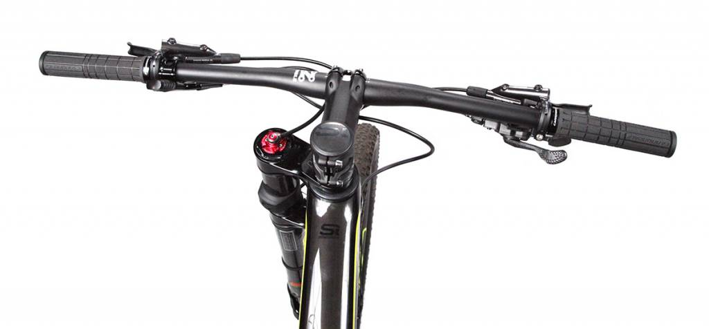

Are "Straight or Mountain Bike" handlebars right for you?

Why to use straight handlebars:
- They have greater control over the bike than the other bars
- They offer lots of leverage for out-of-the-saddle riding
- There’s lots of space to fit accessories
- They’re easy to swap the grips on
- TThey’re ideal for beginner bike tour
Why to NOT use straight handlebars:
- They offer a single hand position (unless you use bar-ends)
- The grip position on many handlebars are not particularly ergonomic for your wrist
- They can be harder to get between traffic due to their width
- There’s less handlebar space for accessories